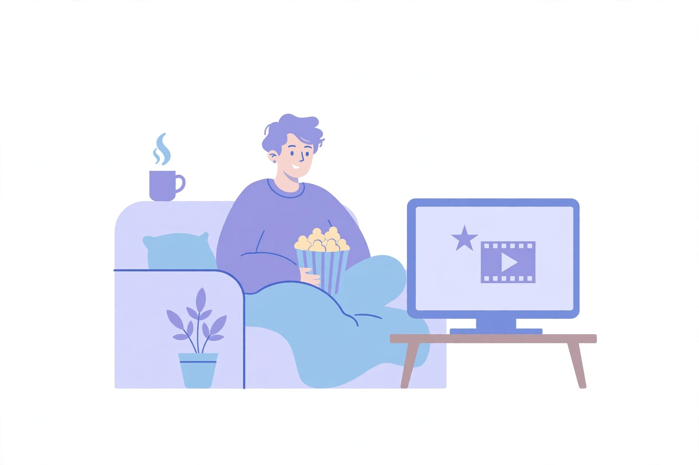
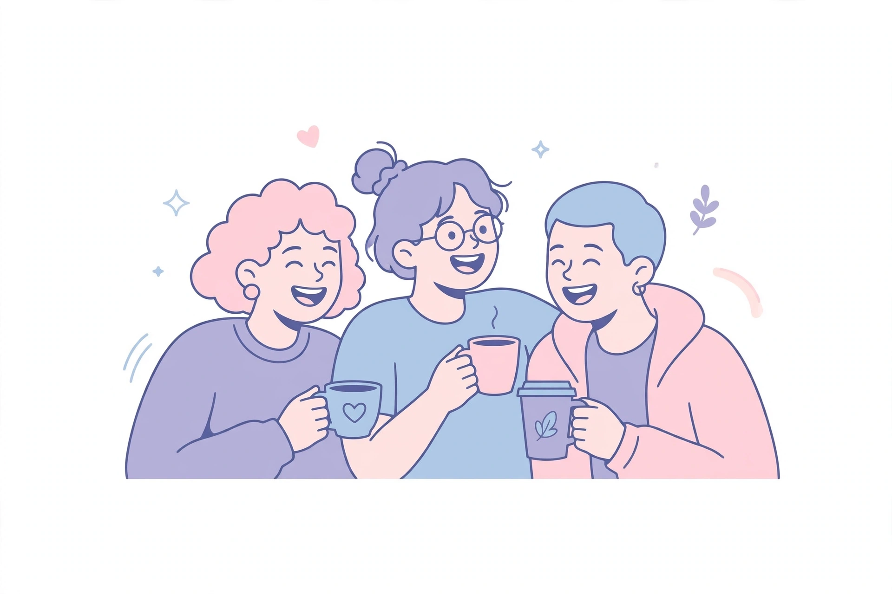

My Favorite Hobbies
In my free time, I enjoy activities that help me relax and spend time with people I care about.
Watching Movies

One of my favorite hobbies is watching movies. I enjoy watching different kinds of films in my free time because it helps me relax and enjoy interesting stories.\
Hang out with friends

These activities help me have fun, relax and spend good time with people I enjoy being around.